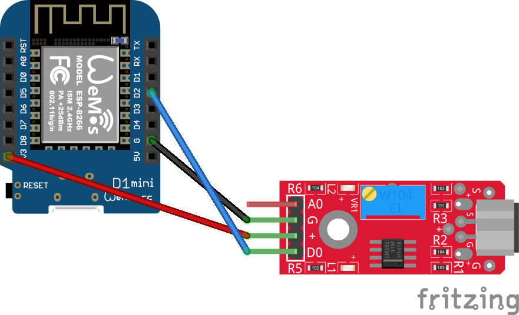
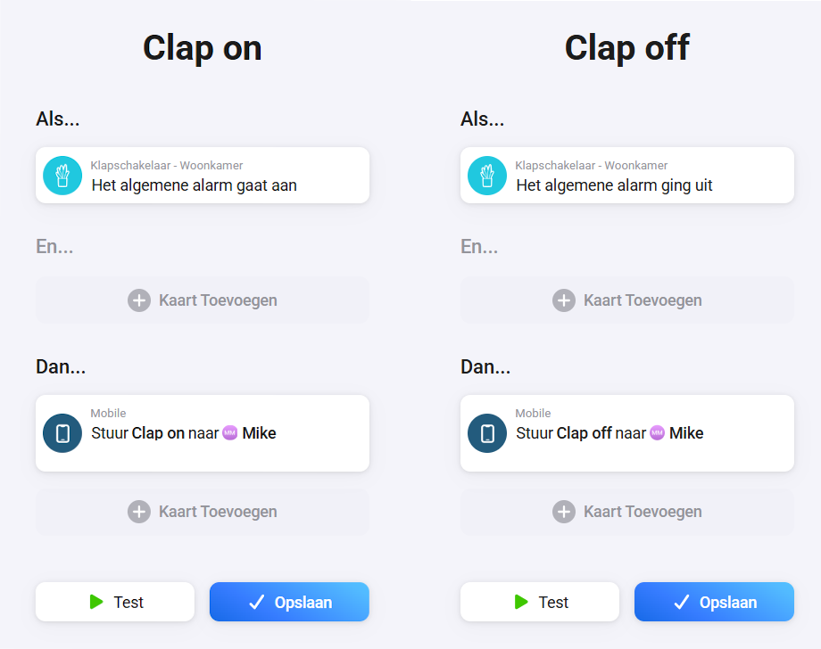
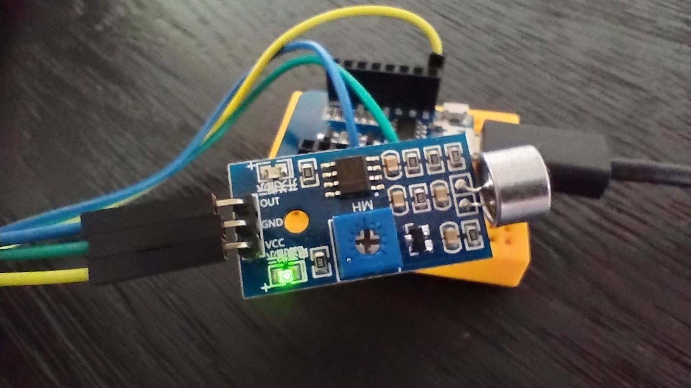

Sommige oude gadgets blijven leuk, juist omdat het idee zo simpel is. In je handen klappen en er gebeurt iets in huis. De originele Clapper was daar misschien wel het bekendste voorbeeld van en voelde destijds als pure toekomstmuziek.
Precies daarom is dit zo’n mooi project om opnieuw tot leven te wekken. Niet als gimmick voor in de vitrinekast, maar als echte trigger binnen je smart home. Met een Wemos D1 Mini, een geluidssensor en Homeyduino bouw je een moderne klapschakelaar die een dubbele klap herkent en die daarna een status in Homey omzet.
De code in deze versie is bovendien een stuk netter opgezet. In plaats van alleen maar zo snel mogelijk reageren op ieder geluid, wordt nu gekeken naar pulsduur, debounce en een duidelijk tijdvenster voor de tweede klap. Daardoor werkt de detectie in de praktijk vaak rustiger en betrouwbaarder, zeker in ruimtes waar echo, tikgeluiden of ander achtergrondgeluid een rol spelen.
Wat ga je bouwen?
Je bouwt een zelfgemaakte Clapper switch die via een geluidssensor twee klappen achter elkaar herkent. Zodra die dubbele klap geldig is, wisselt de sensor van status en wordt die wijziging naar Homey gestuurd.
- Dubbele klap als bediening → Je gebruikt een fysiek geluidssignaal als simpele, tastbare trigger.
- alarm_generic in Homey → De status is direct te gebruiken in flows, meldingen of andere automatiseringen.
Daarmee is dit project meer dan alleen een leuke knipoog naar vroeger. Het is een verrassend praktische manier om een slimme actie te starten zonder app, knop of stemcommando.
Benodigdheden
- Wemos D1 Mini of vergelijkbaar ESP8266-board
- Geluidssensor (zoals een KY-37 of vergelijkbaar model)
- USB-voeding voor de Wemos D1 Mini
- Homey met de Homeyduino app
- Arduino IDE met ESP8266 board support en Homeyduino-library
Handige links bij dit project
Dit zijn producten die aansluiten op de benodigdheden in dit artikel.
Waarom is dit nuttig?
Een klapschakelaar klinkt misschien als iets grappigs voor erbij, maar juist dat maakt hem interessant. Je hebt een heel eenvoudige fysieke trigger die je overal kunt inzetten waar een knop onhandig is of waar je snel een flow wilt starten zonder je telefoon erbij te pakken.
Denk bijvoorbeeld aan een slaapkamer, hobbyruimte of werkkamer. Twee klappen kunnen dan een lamp schakelen, een avondroutine activeren of juist alles weer uitschakelen. Zeker in combinatie met Homey voelt dat ineens een stuk slimmer dan alleen een nostalgische gimmick.
Ook technisch is dit een leuk project. Je werkt met timing, filtering, wifi-herstel en statuspublicatie naar Homey. Daardoor leer je niet alleen iets bouwen, maar ook meteen hoe je zo’n sensor net wat robuuster maakt voor dagelijks gebruik.
Stap-voor-stap uitleg
1. Sluit de geluidssensor aan
Sluit de geluidssensor aan op de Wemos D1 Mini met deze verbindingen:
- OUT → D2
- VCC → 3.3V
- GND → GND
De code gebruikt INPUT_PULLUP, waardoor de sensorpin normaal hoog is en een puls naar laag als detectie wordt gezien. Dat is handig om de ingang stabieler uit te lezen.

2. Installeer Arduino IDE en de benodigde libraries
Installeer Arduino IDE en zorg dat de ESP8266 board support en de Homeyduino-library aanwezig zijn. Controleer daarna via Hulpmiddelen → Board of je het juiste board voor de Wemos D1 Mini hebt geselecteerd.
3. Upload de code
Vul in onderstaande sketch eerst je eigen wifi-naam en wachtwoord in. De code is nu modulair opgezet en controleert niet alleen op dubbele klappen, maar houdt ook rekening met debounce en wifi-herstel. Daarnaast wordt de laatste status lokaal bewaard wanneer Homey tijdelijk niet bereikbaar is, zodat deze later alsnog kan worden gesynchroniseerd.
#include
#include
// =========================
// Configuratie
// =========================
namespace Config {
constexpr const char* WIFI_SSID = "SSID";
constexpr const char* WIFI_PASSWORD = "PASSWORD";
constexpr uint8_t SOUND_PIN = D2;
// Dubbele klap instellingen
constexpr unsigned long CLAP_WINDOW_MS = 650;
constexpr unsigned long CLAP_DEBOUNCE_MS = 150;
constexpr unsigned long WIFI_CHECK_INTERVAL_MS = 60000;
constexpr unsigned long WIFI_CONNECT_TIMEOUT_MS = 30000;
constexpr const char* HOMEY_NAME = "Klapschakelaar";
constexpr const char* HOMEY_CLASS = "sensor";
constexpr const char* HOMEY_CAPABILITY = "alarm_generic";
}
// =========================
// State
// =========================
struct ClapState {
int count = 0;
unsigned long lastDetectedAt = 0;
bool lastPinState = HIGH;
};
struct AlarmState {
bool currentAlarmStatus = false;
bool lastPublishedAlarmStatus = false;
bool hasPublishedState = false;
bool dirty = false;
};
struct WifiState {
unsigned long lastCheckAt = 0;
bool wasConnected = false;
bool reconnectedEvent = false;
};
ClapState clapState;
AlarmState alarmState;
WifiState wifiState;
// =========================
// Functiedeclaraties
// =========================
void connectToWifiWithTimeout();
void maintainWifi(unsigned long currentMillis);
bool canPublishToHomey();
void initializeHomey();
void processSoundInput(unsigned long currentMillis);
void handleCompletedClapWindow(unsigned long currentMillis);
void toggleAlarmStatus();
void markAlarmState(bool newStatus);
bool shouldPublishAlarmState();
void publishLatestAlarmStatusToHomey();
void syncAlarmStateIfDirty();
// =========================
// Setup
// =========================
void setup() {
Serial.begin(115200);
pinMode(Config::SOUND_PIN, INPUT_PULLUP);
Serial.println();
Serial.println(F("--- Clapper Systeem Gestart ---"));
connectToWifiWithTimeout();
initializeHomey();
}
// =========================
// Main loop
// =========================
void loop() {
Homey.loop();
yield();
const unsigned long currentMillis = millis();
maintainWifi(currentMillis);
if (wifiState.reconnectedEvent) {
wifiState.reconnectedEvent = false;
syncAlarmStateIfDirty();
}
processSoundInput(currentMillis);
handleCompletedClapWindow(currentMillis);
}
// =========================
// WiFi
// =========================
void connectToWifiWithTimeout() {
WiFi.mode(WIFI_STA);
WiFi.begin(Config::WIFI_SSID, Config::WIFI_PASSWORD);
Serial.print(F("Verbinden met WiFi..."));
const unsigned long startAttemptTime = millis();
while (WiFi.status() != WL_CONNECTED &&
millis() - startAttemptTime < Config::WIFI_CONNECT_TIMEOUT_MS) {
delay(500);
Serial.print(F("."));
}
Serial.println();
if (WiFi.status() == WL_CONNECTED) {
Serial.print(F("[SUCCES] Verbonden! IP-adres: "));
Serial.println(WiFi.localIP());
wifiState.wasConnected = true;
} else {
Serial.println(F("[WIFI] Timeout bereikt. Sensor start zonder wifi."));
wifiState.wasConnected = false;
}
}
void maintainWifi(unsigned long currentMillis) {
if (currentMillis - wifiState.lastCheckAt < Config::WIFI_CHECK_INTERVAL_MS) {
return;
}
wifiState.lastCheckAt = currentMillis;
wifiState.reconnectedEvent = false;
Serial.print(F("[DEBUG] WiFi status: "));
Serial.print(WiFi.status());
Serial.print(F(" | IP: "));
Serial.println(WiFi.localIP());
const wl_status_t status = WiFi.status();
if (status == WL_CONNECTED) {
if (!wifiState.wasConnected) {
Serial.print(F("[WIFI] Opnieuw verbonden! IP-adres: "));
Serial.println(WiFi.localIP());
wifiState.wasConnected = true;
wifiState.reconnectedEvent = true;
}
return;
}
if (wifiState.wasConnected) {
Serial.println(F("[WIFI] Verbinding kwijt. Herstellen..."));
wifiState.wasConnected = false;
} else {
Serial.println(F("[WIFI] Nog niet verbonden. Nieuwe poging..."));
}
WiFi.begin(Config::WIFI_SSID, Config::WIFI_PASSWORD);
}
bool canPublishToHomey() {
return WiFi.status() == WL_CONNECTED;
}
// =========================
// Homey
// =========================
void initializeHomey() {
Homey.begin(Config::HOMEY_NAME);
Homey.setClass(Config::HOMEY_CLASS);
Homey.addCapability(Config::HOMEY_CAPABILITY);
}
// =========================
// Klapdetectie
// =========================
void processSoundInput(unsigned long currentMillis) {
const bool currentPinState = digitalRead(Config::SOUND_PIN);
// Detecteer alleen de overgang van HIGH naar LOW
// Dit past beter bij geluidsensoren die zeer korte pulsen geven.
if (clapState.lastPinState == HIGH && currentPinState == LOW) {
const bool debouncePassed =
(currentMillis - clapState.lastDetectedAt) > Config::CLAP_DEBOUNCE_MS;
if (debouncePassed) {
clapState.count++;
clapState.lastDetectedAt = currentMillis;
Serial.print(F("[DEBUG] Geldige klap! (Aantal: "));
Serial.print(clapState.count);
Serial.println(F(")"));
} else {
Serial.println(F("[RUIS] Puls genegeerd door debounce."));
}
}
clapState.lastPinState = currentPinState;
}
void handleCompletedClapWindow(unsigned long currentMillis) {
if (clapState.count == 0) {
return;
}
const bool clapWindowExpired =
(currentMillis - clapState.lastDetectedAt) > Config::CLAP_WINDOW_MS;
if (!clapWindowExpired) {
return;
}
if (clapState.count == 2) {
Serial.println(F(">>> [ACTIE] Dubbele klap! Status omzetten."));
toggleAlarmStatus();
} else {
Serial.print(F("[INFO] "));
Serial.print(clapState.count);
Serial.println(F(" klap(pen) genegeerd."));
}
clapState.count = 0;
}
// =========================
// Status en publicatie
// =========================
void toggleAlarmStatus() {
const bool newStatus = !alarmState.currentAlarmStatus;
markAlarmState(newStatus);
if (shouldPublishAlarmState()) {
publishLatestAlarmStatusToHomey();
}
}
void markAlarmState(bool newStatus) {
alarmState.currentAlarmStatus = newStatus;
if (!alarmState.hasPublishedState) {
alarmState.dirty = true;
return;
}
alarmState.dirty = (alarmState.currentAlarmStatus != alarmState.lastPublishedAlarmStatus);
}
bool shouldPublishAlarmState() {
return alarmState.dirty;
}
void publishLatestAlarmStatusToHomey() {
if (!canPublishToHomey()) {
alarmState.dirty = true;
Serial.println(F("[WAARSCHUWING] Laatste status lokaal bewaard (Geen WiFi)."));
return;
}
Homey.setCapabilityValue(Config::HOMEY_CAPABILITY, alarmState.currentAlarmStatus);
alarmState.lastPublishedAlarmStatus = alarmState.currentAlarmStatus;
alarmState.hasPublishedState = true;
alarmState.dirty = false;
Serial.print(F("[HOMEY] Status naar "));
Serial.print(alarmState.currentAlarmStatus ? F("true") : F("false"));
Serial.println(F(" verstuurd."));
}
void syncAlarmStateIfDirty() {
if (!alarmState.dirty) {
return;
}
Serial.println(F("[HOMEY] Laatste status synchroniseren..."));
publishLatestAlarmStatusToHomey();
4. Selecteer het juiste board en upload
Kies in Arduino IDE het board LOLIN (Wemos) D1 R2 & Mini en upload daarna de code naar de Wemos D1 Mini.
5. Test de detectie via de seriële monitor
Open daarna de seriële monitor op 115200 baud. Klap twee keer achter elkaar en controleer of je in de output ziet dat er twee geldige klappen worden geregistreerd en dat daarna de status wordt omgezet. Test ook bewust met losse tikken, achtergrondgeluid of drie snelle klappen, zodat je goed ziet hoe streng de detectie in jouw ruimte staat afgesteld.

Integratie met Homey
Voeg het apparaat daarna toe via de Homeyduino app in Homey. De Clapper gebruikt de capability alarm_generic en schakelt die bij iedere geldige dubbele klap om van true naar false of andersom.
Dat klinkt eenvoudig, maar is in de praktijk juist erg bruikbaar. Je kunt die status namelijk in Homey gebruiken als trigger, voorwaarde of controlepunt binnen flows.
- schakel verlichting in of uit met een dubbele klap
- start een avondroutine of stille modus
- gebruik de status als simpele toggle voor andere automatiseringen
Doordat de code de laatste status lokaal bewaart wanneer wifi tijdelijk uitvalt, blijft het project ook bruikbaar in een situatie waarin je netwerk niet altijd perfect stabiel is.

Praktisch gebruik
De leukste plek voor dit project is vaak een ruimte waar je snel iets wilt kunnen schakelen. Denk aan de slaapkamer, werkkamer, hobbyruimte of zolder. Twee klappen en je zet een lamp, scène of flow aan. Nog eens twee klappen en je zet alles weer terug.
Juist omdat de status wordt omgeschakeld, voelt deze Clapper minder als een grapje en meer als een simpele fysieke bediening voor je smart home. En misschien is dat wel precies waarom dit soort projecten zo leuk blijven: oud idee, nieuwe techniek, verrassend bruikbaar resultaat.

Aandachtspunten
- Een geluidssensor blijft gevoelig voor omgevingsgeluid, tikken en echo. Test daarom altijd op de plek waar je hem echt wilt gebruiken.
- De combinatie van MIN_CLAP_LOW_MS, CLAP_DEBOUNCE_MS en CLAP_WINDOW_MS bepaalt hoe soepel of streng de detectie werkt.
- Controleer goed of je sensor probleemloos op 3.3V werkt en stem de gevoeligheid indien mogelijk af met het trimpotmetertje op de module.
Conclusie
De Clapper is zo’n klassiek idee dat nog steeds leuk is, juist omdat het zo direct werkt. Met deze Homeyduino-versie geef je dat concept een moderne upgrade die niet alleen grappig is om te bouwen, maar ook echt bruikbaar wordt in huis. Dankzij de nettere code, betere filtering en de koppeling met Homey heb je een DIY-project dat weinig kost, snel resultaat geeft en verrassend veel mogelijkheden biedt.
En eerlijk is eerlijk: een lamp of flow schakelen door in je handen te klappen blijft gewoon leuk. Heb je de smaak te pakken? Dan is dit een mooi opstapje naar meer zelfbouw sensoren en slimme automatiseringen in Homey.